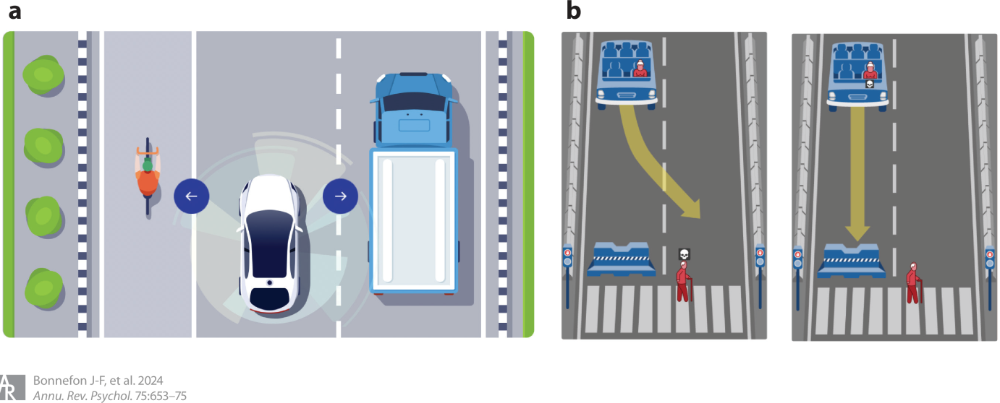
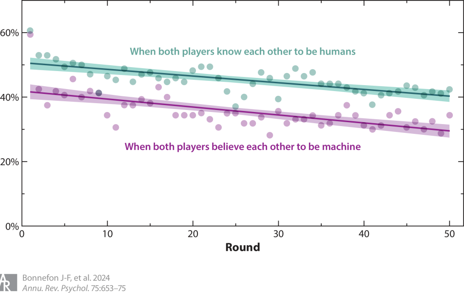

1 引言
AI发展迅速，有些是前瞻性研究，但更多的是追赶AI发展引发的心理挑战
本文将回顾关于AI承担道德角色（moral role）的研究
道德行为者：机器被默许或明确参与或做出道德决策
谁应该获得肾脏移植
交通事故中谁的安全应该优先考虑
谁应该被监禁
在上述领域中，如何让AI和人类价值观一致
道德接受者：机器成为人类道德行为的对象——合作或竞争，同情或恶意
- 这类研究可以提高人们和AI合作的意愿
道德代理者（moral proxy）：机器成为人际交往过程中的道德中介
- 人们通过机器的掩护、粉饰甚至直接执行不道德决策
2 机器作为道德行为者
2.1 内隐道德机器
即使机器没有被直接编码进行道德决策，只要其行为后果具有道德影响，也会被认为是道德行为者。它们不需要去解决道德难题，但它们的错误具有道德意义。
医疗AI错误诊断伤害患者
推荐算法引动儿童看暴力内容
面部识别算法错误将他人识别为恐怖分子
2.1.1 表现
要求机器完美后再使用是因噎废食，一般认为机器投入使用的前提是比人类更为优秀
客观证明机器比人类更优秀本身就是个难题，混合偏见后更是难上加难
在内隐道德机器要求更为严格，而且人们常常高估自己的水平
德国样本表示：专家预测信贷违约错误率为20%-30%（这可能低估了），但要求机器错误率在10%以下
美国样本表示：平均水平司机认为自己技术在前25%，自己驾驶的话可以避免\(frac{1}{3}\)车祸，同时对机器的安全要求更高
美国人对于医疗AI的担忧也一样，他们常常认为AI不能理解自己情况的独特性和细微差异，认为AI推荐的可解释性和透明度不如人类，即使人类医生在这些方面并没有被检验过
2.1.2 偏见
错误的分布和错误的数量同样重要
信用评分算法是否对女性错误更多
自动驾驶对行人的保护是否低于其他人
面部识别算法是否歧视深色人种
错误的性质也很重要
COMPAS算法在美国部分法院用来预测未来两年再被捕的概率
针对白人和黑人错误率相同
白人更多是有利错误；黑人更多是不利错误
白人和西班牙裔中也是这种情况
从数学角度看，算法对公平的定义不同，而且这些定义无法同时满足，需要研究人们在不同领域对公平的偏好
大学录取算法偏好各群体录取率相近
算法判断是否给予保释时，偏好不同群体之间的假阳性率相等，而不是准确率
算法用于贷款分配时，优先考虑还款率高的申请人
研究更多是基于计算机科学和不可能性定理（impossibility theorems，定义无法同时满足），缺乏心理学导向研究
人们对算法公平的担忧也是研究重点
媒体广泛讨论机器会学习、放大数据集中的偏见
人们认为机器更具同质性——一台机器有偏见，所有机器都有偏见
认为机器继承了人类纠正偏见的难度，低估了人类编程的能力
人类对机器偏见的愤怒程度低于对人类偏见的愤怒
担忧人类偏见的群体反而愿意让机器进行决策
部署内隐道德机器时，需要考虑弱势群体的态度、非专家的知识基础和清晰可视化、可理解
2.1.3 对伤害的责备和其他反应
从理性角度看对机器生气是没有意义的，但从心理学角度看可能是因为认为机器具有自主性
内隐道德机器犯错时反应更强烈
对自动驾驶责备更多，反应更强烈，且认为后果更严重
缺乏关于其他领域的研究
对机器的歧视反应更强烈，可能是因为机器被认为是没有偏见的
对人机合作后果的反应更值得研究，因为除了完全自动驾驶外，机器极少被允许不在人类监督下进行决策
人为车祸较为宽容，机器车祸更为严厉
人机合作车祸更多指责人类
机制并不清楚，为了可以在其他领域研究
2.2 显性道德机器
显性道德机器需要直接解决道德困境
道德困境通常是两种道德原则之间的冲突
在线内容审查机器需要在言论自由和抑制冒犯或有害内容之间进行抉择
医疗AI需要在立刻给出当前最优诊断（即便无法向人类解释推理过程）和进一步检测以提高可解释性（但这可能会延迟一个对时间敏感的诊断）之间进行抉择
AI道德价值（如仁慈、隐私、尊严、透明）发生冲突时，如何应对是缺乏研究的
- 道德价值难以量化
AI指导稀缺资源的分配

有观点认为当悲剧无法避免时，让AI进行决定可能是更好的选择
道德困境中无论做出什么选择都会被指责，决策者需要付出短期或长期情感代价
机器进行抉择时，不同决定受到的指责也和人类不一样，以选择牺牲一人来拯救多人的道德困境为例
选择牺牲一人的人类通常会被更多地指责
机器不会受到指责或者结果发生了反转
要让机器进行选择，我们就要明确目标和优先级，这就涉及到价值对齐（value alignment）问题
- 为了确保机器以符合人类目标和优先级的方式解决道德困境，我们需要了解人类的目标和优先级，并找到教会机器这些目标的方法
2.2.1 价值对齐：问谁
伦理学家（ethicist）
- 难以达成共识：德国的国家伦理委员会在AVs遇到必须选择拯救乘客还是其他道路使用者的情况下如何决策方面无法达成共识
机器制造者
- 他们不愿意参与讨论，以AVs为例，无论是优先驾驶者还是行人都会得罪部分人
普通大众
AVs优先保护驾驶者还是行人是消费者关注的核心问题之一
道德问题影响大众接受AVs
了解消费者的道德偏好可能是显性道德机器发挥潜在益处的前提条件
其他利益相关者
- AVs会影响其他道路使用者
2.2.2 价值对齐：如何问
显性道德机器道德优先级的测量十分困难
需要在大量相互冲突的价值或优先事项之间进行权衡，导致实验条件数量剧增
实验设计选择也会影响可行性和结果解释
道德实验要求碰撞无法避免，但实际情况的有可能避免的
提问方式不同结果可能也不同：让被试作为不同身份回答VAs应该怎么做，结果不同
使用虚拟现实技术模拟真实反应
显性道德机器在道德心理学领域是新话题，当前阶段或许最合适的策略是鼓励方法和设计的多样化
2.2.3 价值对齐：如何处理回答
完全依靠普通大众的偏好来制定政策显然是不合适的，占多少比例是个值得探讨的问题
一种可行的方法是考虑专家和大众的一致程度和分歧程度
专家有共识
大众有共识且和专家一致：直接据此制定政策
大众不一致：优先采纳专家共识，向公众清晰、有理地解释专家立场，增强公众理解与接受度
大众有共识但和专家不一致：分析公众共识是否基于偏见，若是偏见则应坚持专家意见
专家内部存在合理分歧
- 大众有共识，且共识被证明是无偏见的：采用大众共识
道德心理学家的职责是确保所采集到的大众道德偏好具备科学性与代表性
3 机器作为道德接受者
面对机器，人类仍然有同理心
看到机器被虐待仍会不适
被要求推倒机器时仍会犹豫
看到实验者侮辱机器时会要求暂停
人与AI的交互已经无法避免
与AVs合作维护交通安全
在线上社区与bot交互，可能沟通可能举报
Wikipedia与机器协作编辑，或者展开编辑战
人类间亲社会者易合作，反社会者难合作，如果对象是机器会如何？
3.1 面向机器的偏好
和研究人际合作合作一样，可以使用金钱代表合作货币研究人机合作
没有比金钱更好的其他“货币”可以替代
人们似乎普遍认为机器仍“想要”钱，至少在实验程序上如此
合作游戏中存在机器惩罚（machine penalty），即存在合作行为，但会下降
在一次性信任游戏中，只有34%的人类选择回报机器的信任，而回报人类的比例为75%
在一次性囚徒困境中，人们与机器的合作率为36%，低于与人类合作的49%
在一次性独裁者游戏中，人们将16%的资源分给机器，而分给人类的比例为39%
在一次性公共物品游戏中，人们与机器合作时平均贡献了40%，而与人类合作时贡献达55%

重复性游戏进一步揭示了机器惩罚随互动次数增加的变化
通过欺骗的方法消除（认为）机器和人类策略不同产生的影响，可以保证仅仅是相信对方是人或是机器这一信念的影响
图 2中的平行线表明机器惩罚一直存在且未发生改变
3.2 克服机器惩罚
AI超越人类很重要，但要充分发挥其作用，还是要对人机合作进行研究
一方面是技术发展，另一方面是从心理层面研究为什么出现机器惩罚，如何缓解
拟人化被视为潜在解决方案
外形、情绪等轻度拟人化并没有提高合作水平
较高拟人化会产生恐怖谷效应
女性化有效，可能是因为女性形象与愿意合作相联结，但这种联结存在偏见
进行欺骗，用合成真人头像代表机器，消除了机器惩罚，但违反AI伦理
未来需要研究不依赖拟人化的方案，建立新的社会规范可能是新方向
4 机器作为道德代理
机器以一种道德的方式作为人类交流的中介。
4.1 委托给机器
越来越多任务被委托给机器
人们也可能将不道德行为委托给机器
匿名性
与受害者之间有心理距离：不直接接触受害者
不易被发现
模糊性：只关心结果，不会直接指示不道德行为
在不知情的情况下AI进行了不道德行为：AI联合定价
也能使用AI促进道德行为
使用AI代为捐款，会产生承诺机制
AI顾问，让AI动态地建议或促进人类作出道德决策
4.2 机器伪装（Machine Masquerade）
机器伪装，又称AI中介交流（AI-mediated communication），利用技术修改自己的语言、声音或外貌，以改变互动对象的行为
书面文本、头像照片、甚至实时线上互动的声音和面部动态都可以被修改
学生可以用ChatGPT来让自己的表达更专业，企业主可以用它使自己听起来更可信，社交媒体用户则可以请求其生成符合自我形象或道德美德信号的帖子
使用机器代写内容的人会被认为不值得信任
仍需深入研究当机器使用行为未被发现时，人们可能获得的实际或声誉上的好处，以及这些好处在不同披露方式下会保留多少
去除客服的外国口音可能减少种族歧视，但也可能被认为是迎合偏见，而非改变偏见本身
新领域
人们如何使用技术来改变自身形象，以改变道德互动的结果，或管理自己的道德声誉
不同披露方式对其影响
社会应如何应对这一技术所引发的新伦理困境
5 总结
未涵盖所有问题
如何看待人工智能抄袭
人工智能代理的存在是削弱还是增强人类群体之间的信任
性爱机器人如何改变人类间的亲密关系